A quiet browser for Linux.
Written in Rust with GTK 3 and WebKitGTK. No Electron, no Chromium, no account.
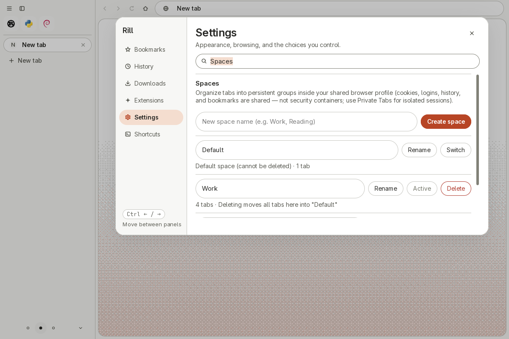
Download Rill for Linux
Direct Linux builds from GitHub Releases, with SHA-256 verification.
Latest release
Checking GitHub for the latest stable build
Build from source instead
Requires current stable Rust (1.89 or newer for locked dependencies), GTK 3, WebKitGTK 4.1, and GStreamer media plugins. The Cargo package and executable remain named search for profile compatibility.
CARGO_TARGET_DIR=target/rill cargo build --release --bin search
./target/rill/release/searchBuilt to stay out of the way
Start with Back, Forward, Reload, and the address field. Move tabs to a vertical sidebar, organize projects into Spaces, or tune every toolbar button when you want more control.
Onboarding inside a real tab
Configure your look, tab layout, and search engine right in the browser tab or skip straight in with one click and no modal.

- Spaces and layout presets
- Group tabs into persistent named Spaces inside one profile, and pick Minimal, Standard, or Full toolbar presets.
- Built-in blocking and omnibox
- Compiles 15,775 bundled EasyList and EasyPrivacy rules inside WebKitGTK, plus Ctrl+L local search and Ctrl+Shift+H element hiding.
- Sleeping tabs
- Idle tabs release their WebKit view after ten minutes unless playing audio, keeping multi-tab sessions light.
Inside Rill, screen by screen
Twenty captures from the native GTK 3 and WebKitGTK build across Warm paper and Warm charcoal. Select any screenshot to inspect it at full size.
Browsing, menu, and start page
Live Wikipedia browsing with the full browser menu, plus Warm paper and Warm charcoal start pages.

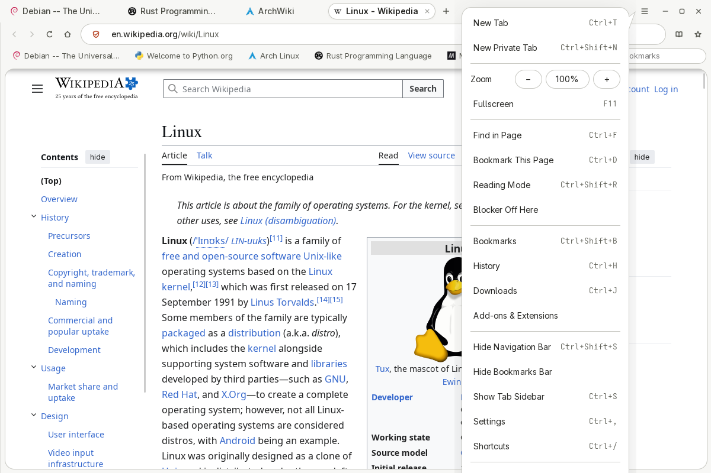
Top tabs, bookmarks bar, and the full menu over Wikipedia: zoom controls, Reading Mode (Ctrl+Shift+R), per-site blocker toggle, and sidebar switching.

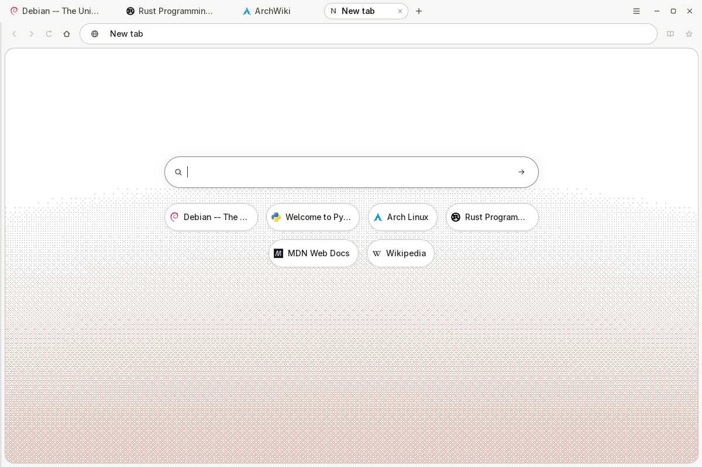
Centered search bar and six saved site shortcuts over Rill's Bayer dithered wave, using compact browser-drawn window controls.

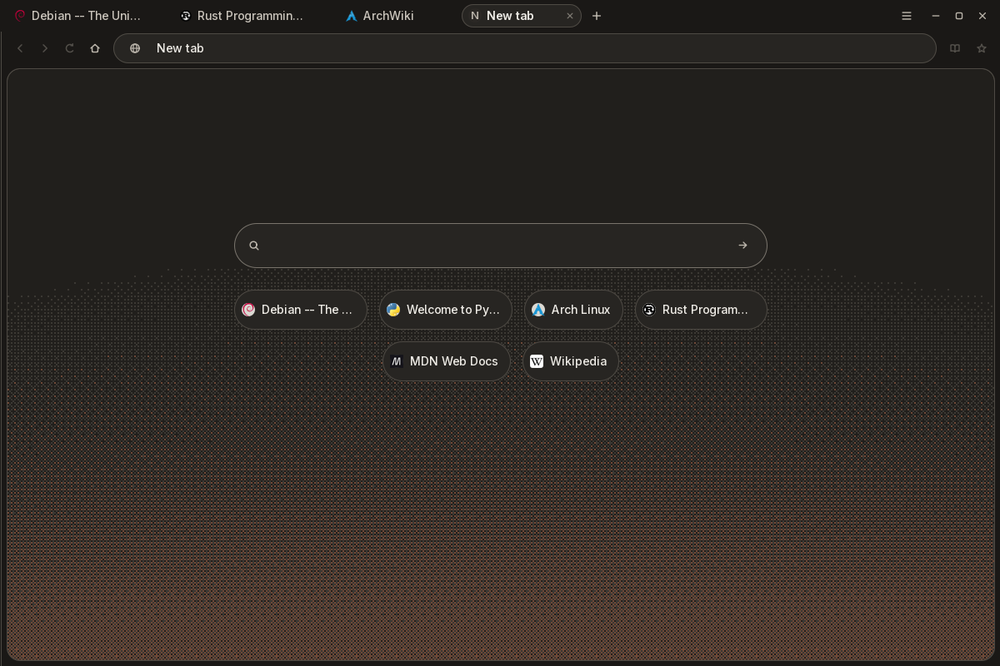
Low-glare charcoal surface with matched GTK tab strip, address bar, and shortcut chips across the same start-page layout.
Vertical sidebar, top tabs, and Spaces
Compare Warm paper and Warm charcoal across vertical tabs, horizontal top tabs, pinned sites, and compact 900px windows.

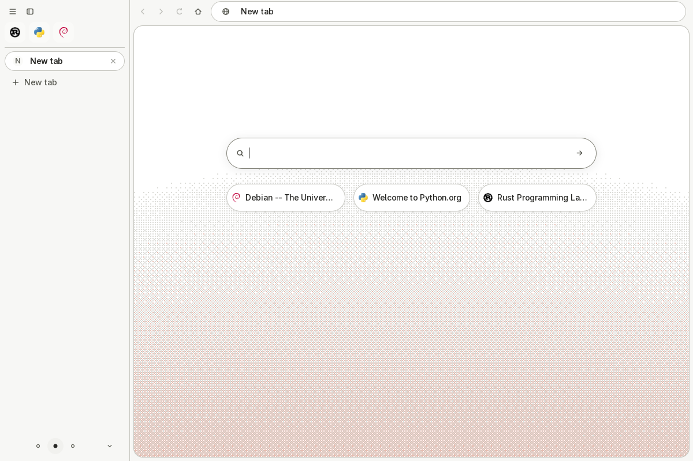
Pinned site icons sit at the top of the left rail, tabs stack cleanly below, and Space switcher dots anchor the bottom edge.

The vertical tab column, pinned icons, and bottom Space controls paired with the Warm charcoal start page.

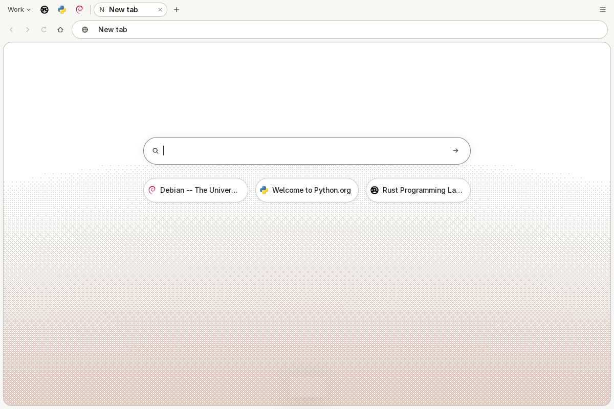
Switching to top tabs keeps the active Space menu and pinned site favicons compactly aligned on the left side of the tab bar.

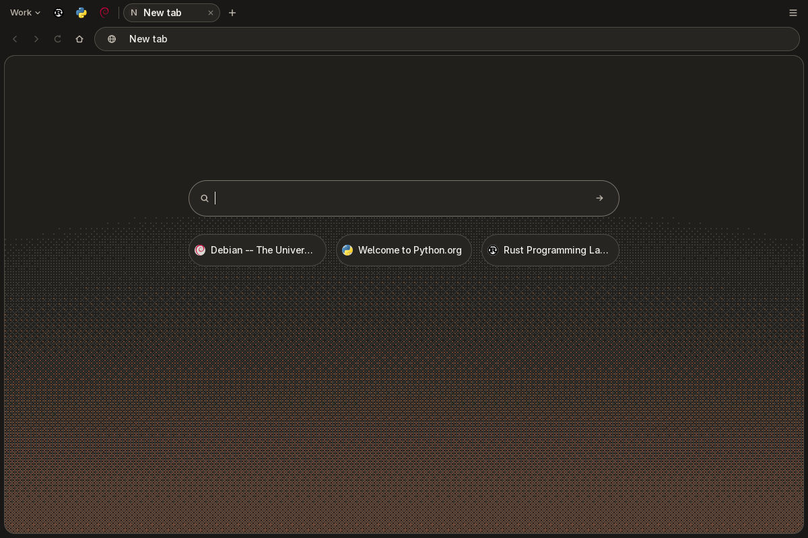
Horizontal tab layout in dark mode with the same Space selector, pinned sites, and quiet chrome.

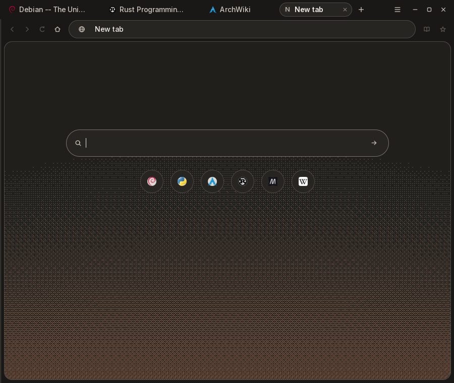
Start-page shortcuts can switch from labeled chips to circular icons, keeping six saved sites on one line in narrower windows.
Sidebar navigation paired with icon-only shortcuts on a smaller 900px screen without crowding the address bar or page area.
Omnibox and quick switching
Press Ctrl+L to jump straight to open tabs, bookmarks, or your chosen search engine without touching the mouse.

Typing arch surfaces the open ArchWiki tab to switch immediately, followed by Startpage search, bookmarks, and opt-in suggestions.

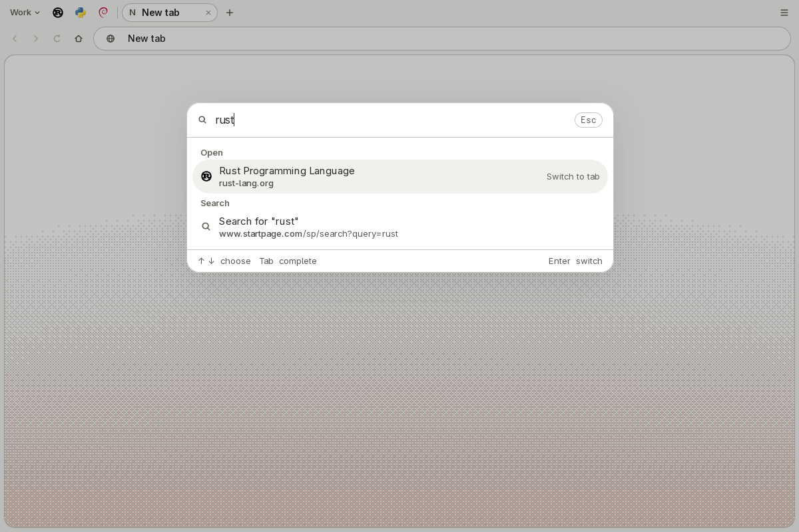
Inside the Work Space, querying rust ranks the open rust-lang.org tab first with keyboard hints for Tab completion and Enter to switch.
Native GTK settings
One searchable overlay for appearance, toolbar visibility, Spaces, history, bookmarks, downloads, extensions, and keyboard shortcuts.

Switch between Light, Dark, and System themes, choose how start-page bookmarks appear, and pick System, Browser, or Hidden window controls for tiling window managers.

Show or hide the navigation bar, Back/Forward, Reload, Home button, and tab sidebar individually while keeping every action reachable via shortcuts and the menu.

Create, rename, switch, and delete named Spaces with direct search inside Settings and a plain statement that Spaces share profile cookies and history.
In-tab onboarding
First launch opens inside a real browser tab with live previews and one-click defaults—no modal wizard locking the window.
Configure appearance, tabs, and search right away, or click Use defaults (or press Esc) to start browsing immediately.

The same first-run welcome screen matched to a dark desktop palette, paired with the terracotta dithered contour.

Choose System, Light, or Dark appearance and Top tabs or vertical Sidebar; choices preview live before anything is saved.

Startpage is selected by default alongside Ecosia, DuckDuckGo, Google, Bing, and Brave, with no hidden partner redirects.

Live search suggestions stay under an explicit switch (never sent in private tabs or for typed URLs), and starter sites load icons only if selected.

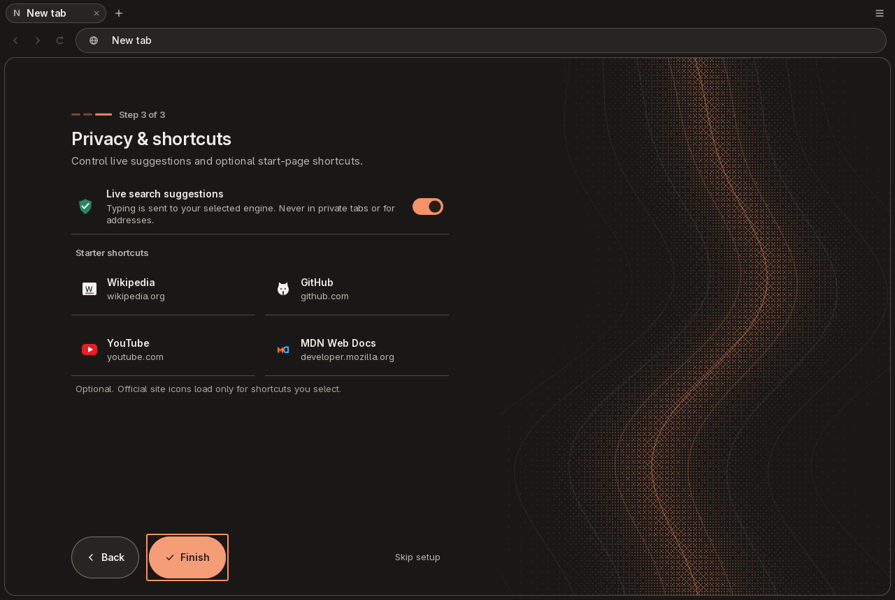
Step 3 rendered in Warm charcoal, ready to finish setup or return to earlier steps at any time.
Honest limits before you switch
Rill is not a Chromium fork. Reading what it leaves out will save you time before moving a workflow over.
- Extensions and password managers
-
WebKitGTK does not provide WebExtensions background workers,
chrome.*messaging, ornativeMessaging. Pure content-script add-ons can load, while Bitwarden, 1Password, and popup-driven extensions do not work. - No accounts, sync, or DRM
- Rill has no cloud sync, passkey integration, multi-window mode, or DRM/EME video decryption. Local bookmarks and history can be imported from Firefox, Chromium, Chrome, Brave, Edge, and Vivaldi.
- Memory footprint and media codecs
-
WebKitGTK separates UI, web content, and network processes, so memory stays well above a minimal single-process target and varies widely across real websites; running as an AppImage adds runtime extraction overhead too. Video playback relies on system
gst-plugins-goodandgst-libav. - Distribution and desktop coverage
- Tested on X11 Openbox and Wayland Sway. KDE/KWin, Hyprland, and Omarchy are untested. Check the download section above for each release's minimum Linux and glibc requirements.
Brand marks and vector sticker sheet
Built directly from Rill's orbital application icon, warm paper and charcoal palette, and keyboard shortcuts. Download the crisp SVG sheet for local badges or prints.

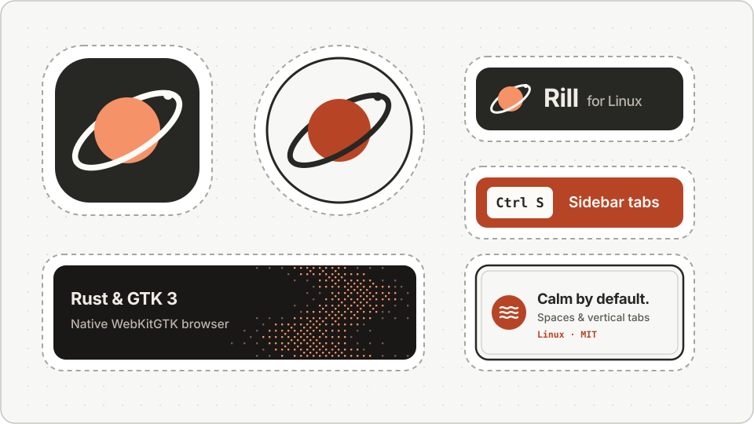